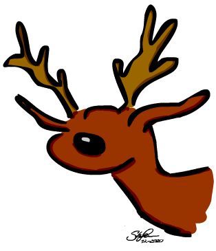
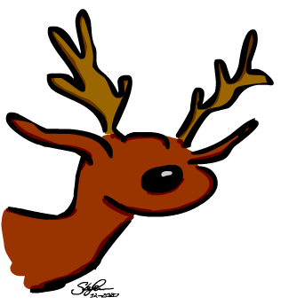

Zwischensitzung: Wiederholung/ Anwendung des bisher Gelernten
Bevor das Jahr zu Ende geht und wir im Januar mit neuen statistischen Tests weitermachen, sollen Sie noch einmal alles Bisherige wiederholen. Da trifft es sich gut, dass uns jüngst die folgenden News vom Nordpol erreicht haben.
1 Doping am Nordpol

Wie jedes Jahr ist der Weihnachtsmann wieder spät dran, weil er mal wieder alle nötigen Vorbereitungen zu lange hinausgezögert hat. (Das Ausfüllen eines psychologischen Prokrastinationsfragebogens verweigerte er bisher hartnäckig, aber es dürfte auch so klar sein, dass es in puncto Aufschieberitis nicht gut um ihn bestellt ist). Während die fleißigen Wichtel und Wichtelinnen sich mit dem Geschenkeverpacken gerade kräftig abrackern, um noch irgendwie die Heiligabend-Deadline einhalten zu können, beschließt der Weihnachtsmann, sich um ein anderes, noch viel größeres Problem zu kümmern. Seine Rentiere hatten den ganzen Sommer nur auf der faulen Haut gelegen und einfach gar nichts für ihre körperliche Fitness getan. Ein entsprechend desolates Bild geben die Tiere deshalb momentan ab. Der einzige, der sich über das Jahr hinweg mal wieder vorbildlich in Schuss gehalten hat, ist ein Rentier mit Namen Rudolf. Eigentlich sollten aber alle Rentiere, die die große Ehre haben, für den Weihnachtsmann arbeiten zu dürfen, entsprechend fit sein. Vor allem ist es wichtig, dass die Rentiere eine bestimmte Fluggeschwindigkeit erreichen können, damit alle Geschenke am Stichtag dann auch rechtzeitig verteilt werden können. Mindestens die Überschreitung der Schallgeschwindigkeit (gemessen in trockener Luft bei 20°C) sollte erreicht werden.
Schon der katastrophale Anblick seiner faulen Tiere verrät dem Weihnachtsmann allerdings, dass für die Weihnachtsnacht dieses Jahr wohl eher nicht mit einem neuen Geschwindigkeitsrekord zu rechnen ist, wenn sich jetzt nicht endlich was tut. Ihm ist auch völlig klar, dass das reguläres Intervalltraining (also der gezielte Wechsel von Ausdauer- und Sprintkomponenten im Flugtraining) hier womöglich nicht mehr zum Erfolg führen wird. Da muss also dringend eine andere Lösung her. Der Weihnachtsmann meint sich zu erinnern, wie ihm einmal eine mehr als fragwürdige und zudem völlig fremde Person erzählt hatte, dass sich fliegende Rentiere sehr gut mit Sternenstaub in ihrem Futter dopen ließen. Das solle wohl „wahre Wunder“ bewirken. Aber Moment, war es wirklich Sternenstaub oder doch Kometenhagel? Seine Erinnerung an dieses Gespräch mit dem seltsamen Fremden ist einfach zu schwach, weshalb der Weihnachtsmann sich kurzerhand entschließt, die Sache zunächst wissenschaftlich zu ergründen. Da trifft es sich gut, dass er noch ein Buch über “Wissenschaftliche Methoden und Statistik für PsychologInnen“ rumliegen hat, das letztes Jahr zu Weihnachten einfach niemand unter dem Weihnachtsbaum haben wollte. Nach kurzer Lektüre ist klar: Ein Randomized-Controlled-Trial (RCT) muss her. (Eigentlich in diesem Fall ein RRCT: „Reindeer Randomized Controlled Trial.)
Von seinen unzähligen fliegenden Rentieren (es sind tatsächlich mehrere hundert Stück in der Population) wählt der Weihnachtsmann 20 Rentiere zufällig aus, die an seinem Experiment teilnehmen sollen. Rudolf darf nicht teilnehmen, obwohl er sich natürlich mustergültig als erster freiwillig gemeldet hatte. Alle 20 Rentiere müssen zunächst eine abgesteckte Strecke entlangfliegen, damit ihre anfängliche Höchstgeschwindigkeit erfasst werden kann (Baseline-Messung). Was soll man sagen, es sieht nicht gut aus. Nach dieser doch recht ernüchternden Anfangsmessung geht es dann richtig los. Die Hälfte der Tiere kommt in die Kontrollgruppe. Die tägliche Ration Heu dieser Kontrollrentiere wird also lediglich mit einem Placebo, so genanntem „Fake-Sternenstaub“, angereichert. Das Heu der zehn Experimentalrentiere dagegen wird täglich mit hoch konzentriertem Sternenstaub angereichert, welcher aus der letzten Supernova gewonnenen wurde. Da nicht mehr viel Zeit bleibt bis Weihnachten, wird bereits nach fünf Tagen erneut geschaut, wie sich die Höchstgeschwindigkeit der Versuchsrentiere verändert hat.

Die Daten müssen jetzt also ausgewertet werden. Wie aus einem Brief vom Weihnachtsmann an das psychologische Institut in Göttingen hervorgeht, bittet Sie der Weihnachtsmann dabei dringend um Ihre Hilfe. Denn obwohl er das Buch über wissenschaftliche Methoden und Statistik halbwegs gründlich studiert hat, traut er sich noch nicht zu, die Auswertung ganz alleine durchzuführen. Zu viel steht einfach auf dem Spiel.
Die Daten des Versuchs hat der Weihnachtsmann in einer Excel-Datei für Sie bereitgestellt. Diese können Sie direkt hier vom Nordpol-Server herunterladen.
Außerdem hat der Weihnachtsmann einen Brief an Sie beigefügt mit Fragen, die er gerne von Ihnen beantwortet hätte. Hier der Brief:
2 Der Brief vom Weihnachtsmann
Liebe Studierende,
für die Auswertung meines Rentierversuchs brauche ich Ihre Hilfe. Ich habe folgende Fragen an Sie:
Wie sehen die Daten meiner 20 zunächst ungedopten Rentiere zu Beginn der Studie deskriptiv aus?
Was ist die Minimalgeschwindigkeit und was die Maximalgeschwindigkeit?
Was ist der Median und was ist der Mittelwert der Fluggeschwindigkeit zu diesem Zeitpunkt?
Bitte erstellen Sie auch eine Grafik, die geeignet ist, die Verteilung der Werte zu beschreiben. Ist die Verteilung symmetrisch oder nicht?
Wie Sie sich schon denken können, interessiert mich natürlich nicht nur meine Zufallsstichprobe. Ich möchte anhand der Stichproben eigentlich gerne Rückschlüsse auf die Population ziehen.
Wie schnell fliegen wohl ungedopte Rentiere im Mittel, wenn sie das ganze bisherige Jahr nur auf der faulen Haut gelegen haben?
Bitte geben Sie sowohl eine Punkt- wie auch eine Intervallschätzung ab, die eine Spannbreite plausibler Werte für die wahre mittlere Fluggeschwindigkeit angibt.
Kann man annehmen, dass ungedopte Rentiere, die bisher nur faul rumlagen, langsamer als der Schall sind? Warum?
Bitte erstellen Sie auch eine Abbildung, die alle vier Gruppen zusammenfasst. Am besten ein Säulendiagramm mit 95% KIs.
Kann ich davon ausgehen, dass das Doping mit Sternenstaub meine Rentiere schneller macht? Bitte testen Sie das. Was ist dieser “p-Wert” den man als Ergebnis eines Signifikanztests bekommt?
Führt das Doping mit Sternenstaub dazu, dass die Rentiere das Minimalkriterium „Schneller als der Schall“ erfüllen? Kann ich eventuell sogar davon ausgehen, dass sie schneller sind als der Schall? Was ist die standardisierte Effektgröße für die geschätzte Veränderung? Erstellen Sie bitte ein 95% KI für die standardisierte Effektgröße, um die Spannbreite für den wahren Effekt besser einschätzen zu können. Bitte stellen Sie die standardisierte Effektgröße auch in einer Grafik dar.
Kann ich davon ausgehen, dass auch meine Kontrollgruppenrentiere durch einen Placeboeffekt auch schneller werden? Eine Placebowirkung in diese Richtung hatte ich zumindest vermutet. Reicht der hier vorliegende Placeboeffekt aus, dass die Rentiere das Minimalkriterium „Schneller als der Schall“ erfüllen? Kann ich evtl. sogar davon ausgehen, dass auch meine Placeborentiere schneller sind als der Schall? Was ist die standardisierte Effektgröße für die geschätzte Veränderung? Erstellen Sie bitte ein 95% KI für die standardisierte Effektgröße, um die Spannbreite für den wahren Effekt besser einschätzen zu können. Bitte stellen Sie die standardisierte Effektgröße auch in einer Grafik dar.
Sind mit echtem Sternenstaub gedopte Rentiere schneller als Rentiere, die nur Placebo bekommen? Das war zumindest immer meine Vermutung. Was ist hier die Größe des standardisierten Unterschieds?
Wie viel schneller als der Schall müssten gedopte Rentiere in Wirklichkeit sein, damit man mit einer Stichprobe von 10 gedopten Rentieren eine 90%-ige Chance hat, ein signifikantes Ergebnis zu kriegen?
Angenommen gedopte Rentiere flögen tatschächlich im Schnitt mit 1340 km/h: Wie viele gedopte Rentiere hätte man untersuchen müssen, damit man eine Geschwindigkeit, die mindestens so viel nach oben von der Schallgeschwindigkeit abweicht, wie die oben angegebene, mit 90% Wahrscheinlichkeit durch ein signifikantes Ergebnis findet?
Ich wünsche Ihnen ein frohes Weihnachtsfest und hoffe, dass ich es rechtzeitig zur Bescherung zu Ihnen schaffe.
Beste Grüße vom Nordpol und vielen Dank für Ihre Hilfe,
Ihr Weihnachtsmann.

Copyright © 2020 Simon Stephan. All rights reserved.